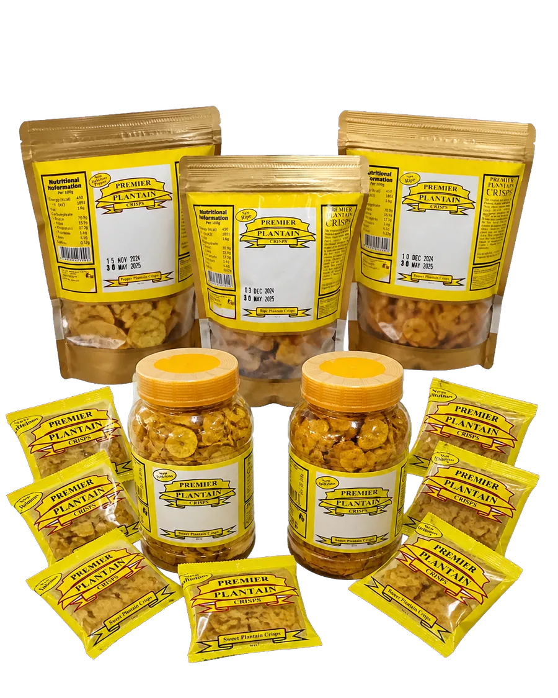
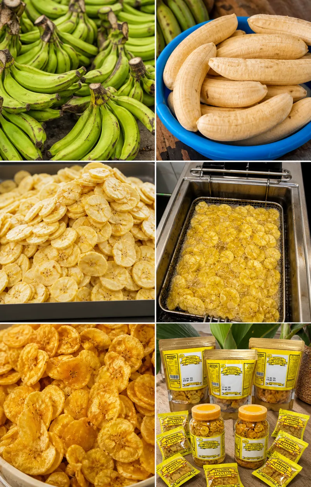

From the Masters of Crispology
Crispy Plantain
with real character.
Golden, crunchy and made from locally sourced plantain. Find your favourite: Sweet, Ripe or Pepper.
Three bold flavoursMade in LagosSnack happy
CRUNCH
TIME
TIME


From plantain to packet
Simple ingredients.
A seriously good crunch.
Premier turns a familiar Nigerian favourite into a snack made for sharing, school breaks, busy days and every in-between moment.
Our crisps are made with care in Lagos, using locally sourced plantain and a recipe refined for that unmistakable Premier crunch.
Ask about bulk orders →For retailers & events
Put Premier on your shelf.
Stocking a shop, planning an event, or ordering for your team? We offer dependable bulk and trade ordering for Premier Plantain Crisps.
Make a trade enquiry →